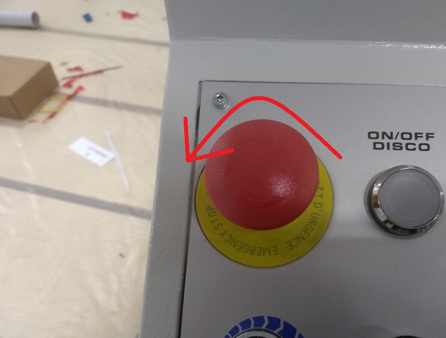

PE0000 Emergenza generale
Spiegazione dell'errore
Macchina in situazione di emergenza, la lampadina rossa è lampeggiante e la macchina non si muove. Il circuito delle emergenze risulta aperto.
Possibili cause
- Fungo di emergenza premuto;
- Guasto del fungo di emergenza;
- Guasto della centralina di sicurezza all'interno del quadro eletrrico;
- Cavo multipolare collegato dalla consolle al quadro elettrico guasto;
Possibili soluzioni
- Sbloccare fungo di emergenza:
- Controllare il corretto funzionamento del fungo e dei contatti elettrici collegati posti al di sotto del fungo stesso (pulsantiera consolle);

- Controllare il corretto funzionamento della centralina ovvero, una volta verificato che il circuito delle emergenze come da schema elettrico sia chiuso, la centralina dovrà funzionare nel seguente modo:
- Con fungo di emergenza premuto (circuito delle emergenze aperto):

- Con fungo di emergenza rilasciato(circuito emergenza chiuso):

- Con fungo di emergenza premuto (circuito delle emergenze aperto):
- Verificare la continuità tra i cavi collegati sui contatti del fungo e i rispettivi cavi collegati nella morsettiera relativa nel quadro elettrico reperire le info sullo schema;
Articoli collegati
1. Controllare il corretto funzionamento della centralina ovvero, una volta verificato che il circuito delle emergenze come da schema elettrico sia chiuso, la centralina dovrà funzionare nel seguente modo: